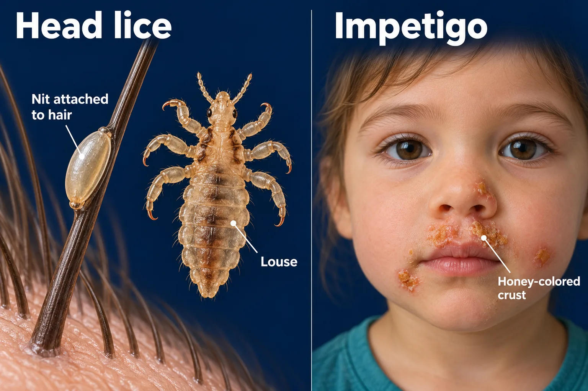

ABSN STUDY HUB · VISUAL STUDY CARD
Head lice and impetigo

Course labels and notes from the original graphic, arranged into readable sections. The illustration is schematic.
Course overview
- HEAD LICE vs IMPETIGO — BOTH ITCH, NOTHING ELSE MATCHES
- One lives on the hair shaft. The other is a crust on the skin. Different bug, different rule.
⭐ THE TELL
💡 Nits are glued to the hair and will not slide — dandruff slides. Honey-crust on the face is impetigo, not eczema.
🪲 HEAD LICE — on the hair shaft
What you see on a hair, above the scalp
- nits — glued on; dandruff would slide off
- the louse itself
Signs and care
- Itching behind the ears and at the nape.
- Permethrin, then comb nits out with a fine comb.
- Wash bedding hot, bag soft toys 14 days.
🦠 IMPETIGO — crust on the skin
What you see
- honey-colored crust around the nose and mouth
- It weeps, then dries to a golden scab.
Cause and care
- Staph or strep. Topical mupirocin; oral if widespread.
- Very contagious by touch — own towel, own bedding.
- Cut the nails so scratching does not spread it.
🏫 WHEN SHE GOES BACK
- Lice: after the first treatment. No no-nit rule.
- Impetigo: 24 hours of antibiotic, lesions covered.
- Neither needs the whole class treated.
🚫 COMMON MISTAKES
- No kerosene, mayonnaise or petroleum jelly.
- Do not share hats, combs or pillows.
- Impetigo after strep — watch for dark urine.